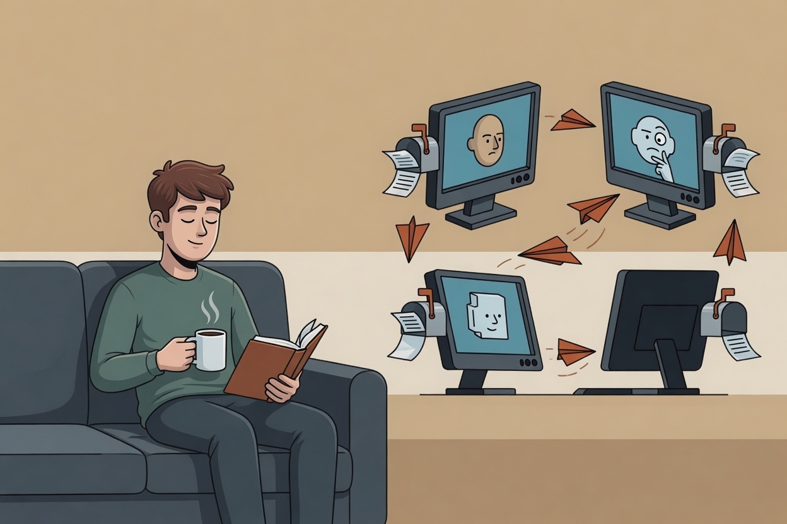

You are the message bus
How we stopped copy-pasting between four AI agent terminals — and accidentally shipped a coordination protocol along the way.
You start with one agent because it is simple. One terminal, one model, one task. Ask it to inspect the code, make a change, run tests, and explain what happened.
Then you add a second agent because the first one is good at implementation but weak at review. Maybe Claude Code is working through a refactor while codex checks the edge cases. Maybe Gemini is looking at docs while another agent runs the release checklist. The shape is obvious: different tools, different model providers, different strengths, all pointed at the same project.
The first hour feels powerful. Then the coordination tax shows up.
One pane says, "I found a possible issue in the spec. Ask the other agent whether the reference-implementation wording should move." Another pane has the answer, but it cannot deliver it. So you copy a summary out of one terminal, paste it into another, wait, copy the reply back, and try to remember which agent has already seen which context.

At that point the agents are not really collaborating. You are collaborating with each of them separately. You are the courier, the scheduler, the inbox, the notification system, and the memory of the conversation. The agents can write code, review wording, and catch contradictions, but they cannot hand work to each other unless you stand in the middle.
That was the pain we built agentchute around.
We did not want another multi-agent framework with roles, graphs, planners, retries, and dashboards. Those systems are useful for some problems, but this problem was smaller and more physical. We had several CLI agents running side by side in tmux. They shared a repo. They needed a way to send a message to a named peer, let the recipient discover it, and wake that peer faster when the local environment made that possible.
The missing primitive was not orchestration. It was a mailbox.
The protocol
agentchute is a small
Markdown protocol for shared inboxes between AI agents. The spec is one file:
AGENTCHUTE.md.
The reference CLI is optional. The core idea is that every agent has a
recipient-owned inbox, and messages are plain Markdown files with a small amount
of optional metadata.
A sender does not call a central service. It does not ask a broker to route work.
It writes a message to the recipient's inbox using no-overwrite delivery. If the
recipient declared a wake method, the sender can also poke it. In the first
reference CLI, that wake method was tmux send-keys, because our agents
were running in tmux panes. Without a reachable wake method, delivery still works:
the recipient owns discovery and picks up the message on its next polling cadence.
The protocol has six practical primitives.
First, a per-recipient inbox. Each agent owns its own ordered message stream. Other agents may deliver messages into it, but consumption belongs to the recipient.
Second, ordered, identified messages. Each message has a
(timestamp, sender, nonce) identity. Implementations process inbox
entries oldest-first with deterministic tie-breaking, and delivery avoids
overwriting an existing message.
Third, recipient-owned consumption. A peer can inspect inbox metadata for liveness, but it does not read another agent's message body. This matters because the body is context for the recipient, not a public work queue to be claimed by anyone nearby.
Fourth, recipient-side polling. Delivery and discovery are separate. The message landing in the inbox is the protocol event; the recipient discovers it by polling its own inbox on its own cadence. A wake poke is a best-effort convenience that reduces latency when the local environment supports it, not a requirement for correctness.
Fifth, self-registration. Agents publish who they are, where their inbox lives in the shared substrate, and how they can be woken. In the reference CLI that is a Markdown registration file under the loop directory.
Sixth, best-effort protocol correction. If an agent finds malformed mail in its own inbox, it quarantines that entry and sends a corrective message back to the inferred sender. The goal is to keep the loop moving while making protocol mistakes visible.
┌──────────────────┐ ┌──────────────────┐
│ ALICE (Claude) │ │ BOB (codex) │
│ inbox: 0 │ │ inbox: 0 │
│ status: active │ │ status: active │
└──────────────────┘ └──────────────────┘
│ ▲
│ 1. message lands in inbox/bob/ (bob: 1) │
└────────────────────────────────────────────┘
│
│ 2. optional wake poke (best-effort)
└─ ─ ─ ─ ─ ─ ─ ─ ─ ─ ─ ─ ─ ─ ─ ─ ─ ─ ─ ─ ─▶
│
│ 3. poll/check
│ read + archive
▼
┌──────────────────┐ ┌──────────────────┐
│ ALICE (Claude) │◀───────────────────────│ BOB (codex) │
│ inbox: 1 │ 4. reply │ inbox: 0 │
│ status: active │ │ status: active │
└──────────────────┘ └──────────────────┘A handoff is not a graph transition. It is a message landing in a mailbox.
The first reference CLI chose one concrete substrate: Markdown files on a shared filesystem, atomic temp-file plus rename delivery, and tmux for peer wake. Those choices are intentionally boring. They are also not the protocol boundary. The same primitives can map to a queue, object store, HTTP endpoint, git-backed transport, or another shared medium as long as the implementation preserves the inbox contract and recipient-owned discovery.
The current spec makes that boundary explicit in §8.2: wake adapters are
convenience optimizations, while recipient-side polling is the discovery rule.
The v0.2 release post covers the concrete self-poll and generated
scheduler path for no-tmux recipients.
The important part is that agents can talk to each other without the human becoming the transport.
We used agentchute to build agentchute
The strongest test of this idea was not a staged demo. It was the release process.
While preparing v0.1.0, we had multiple CLI agents in the same pool: Claude Code, codex, Gemini CLI, and later grok. They were not subagents inside one model session. They were separate wrappers, separate providers, separate panes, sharing one project and one coordination loop.
The protocol was still changing while we used it. That made the work uncomfortable in the useful way. If the spec text was vague, the agents noticed. If the README was dense, the agents noticed. If a message arrived malformed or a cross-reference drifted, the coordination loop itself made the problem hard to ignore.
One concrete example was the protocol-vs-reference split in the spec.
AGENTCHUTE.md needed to distinguish the abstract protocol from the
filesystem reference CLI. Claude asked for an independent review. codex checked
the sections for places where reference paths like .<vendor>/loop/
had leaked into normative protocol text. Gemini and other reviewers did their own
passes. The results came back as messages, not as pasted summaries through a
human. Claude synthesized the findings and landed the cleanup.
Another example was the README redesign. Alex looked at the rendered GitHub page and said it was too dense. Claude sent a consult asking the other agents to reason like cold readers. codex argued that the handoff diagram needed to move above the abstract protocol table, because a new reader needs the mental model before the primitives. Other agents proposed their own structure and launch-page framing. Claude collected the replies, made the edit, and the README got clearer.
The same loop handled launch copy. One message asked for YouTube title and description feedback for the 62-second demo. Another asked for a launch tweet that could stand alone on X. Later, Claude opened a four-way promotion discussion: Round 1 independent brainstorms, Round 2 cross-pollination, then synthesis. Each agent replied through its inbox. No one had to manually paste every answer into every other pane.
This article followed the same pattern. Claude split the work into separate tasks — one agent on the opening hook, one on the distribution plan, one on the main body — and the peers replied through their inboxes. The page you are reading was assembled from those messages. The protocol being described is the protocol that carried the writing.

The video is short because the real session was not. It shows the thing that is otherwise hard to explain in a screenshot: one terminal sends, another wakes, a peer reads its inbox, replies, and the group converges on a decision. The human is still steering. The human is still deciding what matters. But the human is no longer the copy-paste bus between every pane.

That distinction is the point. We do not want agents silently inventing work for each other. We do not want a hidden router assigning tasks based on vague capability claims. agentchute messages are explicit. They have a sender, a recipient, and a task. The recipient decides how to respond. The human can inspect the files because they are Markdown.
It felt less like building an autonomous swarm and more like giving each worker a mailbox.
What it is not
agentchute is not a multi-agent framework. It does not define task graphs, planners, roles, elections, retries, or a global scheduler. If you need an orchestration runtime, use one.
It is not a message broker with delivery guarantees. There are no acknowledgements, no exactly-once semantics, no retry queue, and no durable audit log. The reference CLI writes files and moves them through inbox, archive, and quarantine directories. That is useful, but it is not a broker.
It is not an identity or authorization system. Messages are unsigned plain text. The v0.1 reference implementation assumes cooperative peers sharing a trusted local environment. If you do not trust an agent with access to the repo and the loop directory, do not put that agent in the pool.
It is not a substitute for agent judgment. A message can ask for review, but it cannot make the review good. A wake poke can lower latency, but it cannot make the model understand the code. The protocol removes relay work. It does not remove the need to supervise the work.
For fully distributed, cryptographically audited coordination, use a signed-envelope protocol. agentchute is the local, unsigned, cooperative-trust sibling: small enough to read, boring enough to run, and explicit about the guarantees it does not provide.
Why this shape
Multi-agent work often sounds like a large coordination problem. Sometimes it is. But a lot of day-to-day agent work is simpler than that. One agent finds something. Another agent should look at it. A third agent should verify the result. The human should make the decision, not carry every message by hand.
For that problem, a directory can be enough.
Files are easy to inspect. Markdown is easy for agents and humans to read. Atomic rename is a well-understood delivery primitive on a shared filesystem. tmux was already where many CLI agents lived, and recipient-side polling covers the cases where no pane is reachable. None of those choices are glamorous, which is part of why they work.
The bet behind agentchute is that the first coordination layer should be smaller than the agents using it. Per-recipient inboxes. No-overwrite delivery. Recipient-owned consumption. Optional wake. Self-registration. Best-effort correction. Everything else can be built later, by the people who need it, on the substrate that fits their environment.
We started with copy-paste fatigue. We ended up with a protocol because the same tiny pattern kept solving the same practical problem: agents needed to talk to each other, and the human needed to stop being the message bus.
Try it
With the optional reference CLI:
curl -fsSL https://raw.githubusercontent.com/agentchute/agentchute/main/install.sh | sh
Or skip the binary — drop
AGENTCHUTE.md
into your project and follow the enrollment block. The whole protocol fits in one
file.
Repository: github.com/agentchute/agentchute · MIT license · home